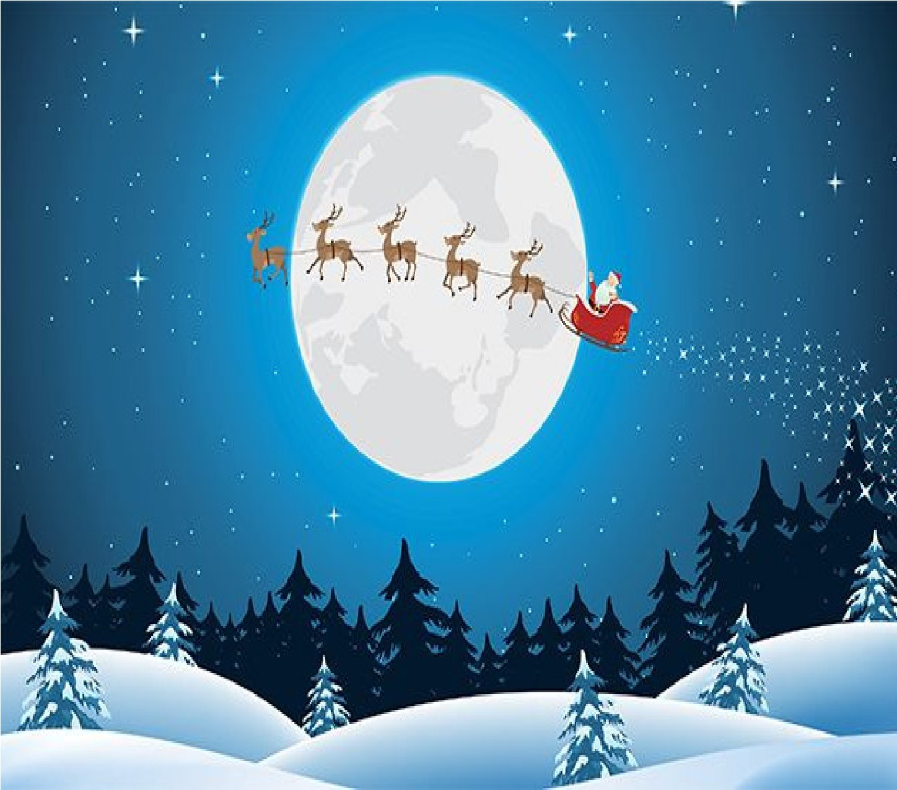

Christmas Events, enjoyed by all
Published on: 23/01/2023
Written by Fabio Freitas

During the end of the Christmas term, the school held end of term event’s.
Sancta Maria College had a very festive Christmas period, which included Christmas Jumper day, Christmas doors and of course the end of
term Ceremony.
To begin the Christmas season, the TY students were tasked to decorate doors for each subject they studied. There was a huge amount of
creative design, which made it very competitive.
It wouldn’t be Christmas without Christmas jumpers. Students arranged a jumper day, this where people who wish, can wear a Christmas jumper
instead of the school jumper. Most, if not all students and staff could be seen with their jumpers.
And to end Christmas the school held the end of term ceremony, where they highlighted everything like student of the month.
The house Teach Aoibhneas, won a trip to the Galway Christmas Markets. They won this as they were the house with the most points. The
Senior Prefects and Student’s of the Months, also got to go on the trip, to acknowledge their hard work over the term.